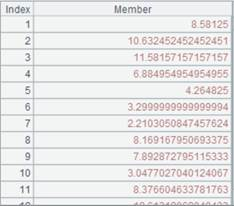
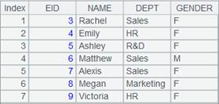
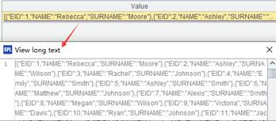

Description:
Generate a table sequence containing a specified number of columns based on a sequence.
A.record(n)
Note:
The function generates a table sequence containing n columns based on sequence A by using the first n members of A as the column names and populating the remaining members to records in turn. By default it enters nulls to the last record if there is no available data left.
Parameters:
|
A |
A sequence |
|
n |
An integer that represents the number of columns in the future table sequence ; its value is greater than 0 and less than and equal to A¡¯s length |
Return value:
A table sequence
Example:
|
|
A |
|
|
1 |
[a,b,1,2,3,4,5,6] |
Return a sequence |
|
2 |
=A1.record(1) |
Generate a one-column table sequence  |
|
3 |
=A1.record(2) |
Generate a two-column table sequence  |
|
4 |
=A1.record(3) |
Generate a three-column table sequence  |